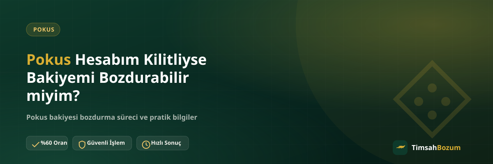

Oyun içi hesaplar bazen beklenmedik şekilde kilitlenebiliyor: art arda yanlış giriş denemesi, platformun kendi güvenlik kontrolü veya şüpheli aktivite tespiti bunun en sık nedenleri arasında. Hesabında bir Pokus bakiyesi varken böyle bir kilitle karşılaşmak, "bu bakiyeyi artık bozduramaz mıyım" sorusunu akla getiriyor. Bu yazıda kilitli bir hesabın bozum sürecini nasıl etkilediğini ve ne yapman gerektiğini açıklıyoruz.
Pokus Hesabı Kilitlenmesi Bozum Sürecini Nasıl Etkiler?
Pokus bakiyesi bozdurma işlemi, bakiye tabanlı bir hizmet olduğu için sürecin dayandığı tek kanıt güncel bakiyeni gösteren bir ekran görüntüsü. Hesabın kilitliyken de bu görüntüyü alıp alamaman, işlemin devam edip etmeyeceğini belirleyen temel nokta. Yani asıl soru "hesabım kilitli" değil, "hesabıma hâlâ girip bakiyemi görebiliyor muyum" sorusu.
Kilit türleri birbirinden farklı olabilir: bazı kilitler sadece belirli işlemleri (örneğin yeni bir cihazdan giriş) kısıtlarken, bazıları hesaba tüm erişimi durdurur. Bu farkı anlamak, bozum işlemine başlamadan önce atman gereken ilk adımı belirliyor.
Hesabım Kilitliyse Bakiyemi Görebilir miyim?
Bu tamamen kilidin türüne bağlı. Eğer hesabına hâlâ giriş yapabiliyor, bakiye ekranını görebiliyorsan, kilit büyük olasılıkla belirli bir işlemi (örneğin para çekme veya transfer) kısıtlıyordur ve bakiyeni görüntülemeni etkilemiyordur. Ama hesabına hiç giriş yapamıyorsan, bakiyeni gösteren bir ekran görüntüsü alman da mümkün olmaz.
Ekran Görüntüsü Alamıyorsam Bozum İşlemi Başlar mı?
Hayır, başlamaz. Bozum süreci güncel bakiyeni doğrulayan bir ekran görüntüsüne dayandığı için, bu görüntüyü hiçbir şekilde alamıyorsan işlem için önce hesabına erişimin geri gelmesi gerekiyor. Burada atlanabilecek bir adım yok; görüntü olmadan bakiyenin güncel ve doğru olduğunu teyit etmek mümkün değil.
Pokus Hesap Kilidi Genellikle Neden Oluşur?
Hesap kilitleri genellikle platformun kendi güvenlik mekanizmasının bir parçasıdır ve çoğunlukla geçici bir koruma tedbiri olarak uygulanır. Art arda hatalı giriş denemeleri, yeni bir cihaz veya konumdan giriş yapılması ya da hesapta olağan dışı bir hareket tespit edilmesi bu kilitlerin en sık görülen tetikleyicileri arasında. Kilidin kesin nedenini ve süresini en doğru şekilde öğrenebileceğin yer, platformun kendi hesap bildirimleri veya destek kanalıdır.
Kilit Süresince Bakiyem Risk Altında mı Kalır?
Hesap kilidi genellikle hesaba erişimi geçici olarak durdurur, bakiyenin kendisini silmez. Bakiyen kilit süresince hesabında kayıtlı kalır; değişen şey yalnızca o anda hesabına girip bakiyeni görüntüleyebilme veya işlem yapabilme imkânın. Yine de kilidin ne zaman açılacağına dair en net bilgiyi platformun kendi destek kanalından almak, bekleme süresi konusunda boşluğa düşmemeni sağlar.
Kilidi Açmak İçin Ne Yapmalıyım?
Hesap kilidi Pokus platformunun kendi güvenlik sürecinin bir parçası olduğu için bu konuda yardımcı olabilecek doğru adres platformun kendi destek kanalıdır. TimsahBozum bir bozum hizmeti sunduğu için hesap kilidini açma veya platform tarafındaki bir sorunu çözme yetkisine veya erişimine sahip değil; bu adım tamamen senin ve platformun arasında ilerler. Kilit açıldıktan ve bakiyeni tekrar görüntüleyebildiğinde bozum sürecine başlayabilirsin.
Kilitli Hesapla WhatsApp'tan Yazabilir miyim?
Evet, durumunu anlatmak ve süreç hakkında soru sormak için resmi WhatsApp hattımızdan yazabilirsin. Ancak işlemin fiilen başlaması için güncel bakiyeni gösteren bir ekran görüntüsü gerektiğini unutmamak gerekir; kilit açılmadan bu görüntü elde edilemiyorsa işlem o noktada beklemede kalır.
Bozum İşlemi Hesabıma Erişim Gerektirir mi?
Hayır, hiçbir aşamada hesabına erişim istenmez. Kullanıcı adı, şifre veya hesabına giriş yapmanı sağlayacak başka bir bilgi talep edilmez; tek ihtiyaç duyulan şey bakiyeni gösteren okunaklı bir görüntü. Bu nedenle hesap kilidiyle ilgili tek engel, bu görüntüyü senin alabiliyor olman; işlemi yürüten taraf olarak bizim hesabına erişmemiz gerekmiyor, zaten gerekmeyecek.
Kilit Açıldıktan Sonra Süreç Nasıl İlerler?
Hesap kilidi kalktıktan ve bakiyeni tekrar görebildiğinde süreç diğer Pokus bozdurma işlemleriyle aynı şekilde ilerler: güncel bakiye ekran görüntünü WhatsApp hattımızdan (+90 543 887 21 71) paylaşırsın, geçerli oranı teyit edersin, onay sonrası ödemen WhatsApp üzerinden görüşülen yöntemle yapılır. Üyelik, form doldurma veya kimlik belgesi gerekmez; Pokus bozdurma hizmetimiz her gün 10:00-03:00 arası aktif.
Bakiye tabanlı bir hizmet olduğu için bakiyenin tamamını bozdurmak zorunda değilsin; istersen bir kısmını bozdurup kalanını hesabında tutabilirsin. Bu esneklik, kilit açıldıktan sonra da geçerliliğini sürdürür.
SMS Doğrulama Kodu veya Şifre İstenirse Ne Yapmalıyım?
Hesap kilidiyle ilgili süreçte veya bozum işlemi sırasında senden SMS doğrulama kodu, şifre ya da hesaba giriş bilgisi istenmesi resmi sürecin bir parçası değildir. Böyle bir talep gelirse bilgi paylaşmadan önce işlemi durdur; bu tür istekler dolandırıcılık girişimi olabilir ve yalnızca +90 543 887 21 71 numarasından yürüyen resmi hattımız bu bilgileri asla talep etmez.
İlgili Yazılar
- Pokus Bozdururken Hesabıma Erişim Veriyor muyum?
- Pokus Bakiyesi Kısmi Olarak Bozdurulabilir mi?
- Pokus Bakiye Ekran Görüntüsü Nasıl Doğru Paylaşılır?
Özetle, Pokus hesabın kilitliyse bozum işlemi otomatik olarak iptal olmaz ama güncel bakiyeni gösteren bir ekran görüntüsü alabilmen gerekir; bunu sağlayamıyorsan önce platformun kendi destek kanalı üzerinden kilidin açılmasını beklemelisin. Kilit açıldığında veya bakiyeni görüntüleyebildiğinde WhatsApp hattımızdan yazarak güncel oranı teyit edip işlemini başlatabilirsin.